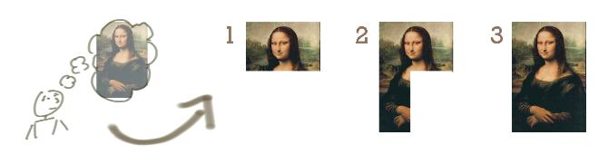

Incremental Development¶
Автор раздела: Ivan Zakrevsky
📝 "The "incremental development" model includes initial planning, initial requirements analysis, initial architectural definition, and initial validation, but allocates design, implementation, verification (and sometimes delivery) activities to a series of stages, each of which provides a portion of the intended functionality. The approach provides for some flexibility to respond to inaccurate cost or schedule estimates by moving functionality to later increments."
—"ISO/IEC/IEEE 12207:2017 Systems and software engineering - Software life cycle processes"

Incremental Development. The image source is "Don't Know What I Want, But I Know How to Get It" by Jeff Patton & Associates¶
📝 "Разделяй и властвуй
Как указал Эдсгер Дейкстра, никто не обладает умом, способным вместить все детали сложной программы. То же можно сказать и о проектировании. Разделите пропрограмму на разные области и спроектируйте их по отдельности. Если, работая над одной из областей, вы попадете в тупик, вспомните про итерацию! Инкрементное улучшение — мощное средство управления сложностью. Вспомните, как Полья советовал решать математические задачи: поймите задачу, составьте план решения, осуществите план и оглянитесь назад, чтобы лучше понять, что и как вы сделали [Polya, 1957].
Divide and Conquer
As Edsger Dijkstra pointed out, no one's skull is big enough to contain all the details of a complex program, and that applies just as well to design. Divide the program into different areas of concern, and then tackle each of those areas individually. If you run into a dead end in one of the areas, iterate! Incremental refinement is a powerful tool for managing complexity. As Polya recommended in mathematical problem solving, understand the problem, devise a plan, carry out the plan, and then look back to see how you did [Polya 1957].
- [Polya 1957]
Polya, G. 1957. How to Solve It: A New Aspect of Mathematical Method, 2d ed. Princeton, NJ: Princeton University Press."
—"Code Complete" 2nd edition by Steve McConnell, перевод: Издательско-торговый дом "Русская Редакция"

{kind=link}